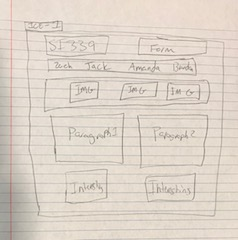
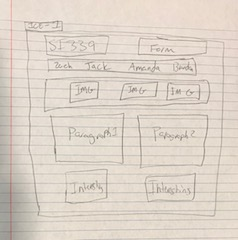

Images



Question 2: Safari vs Chrome vs Firefox. For all three of the browsers the controls for the video vary. Additionally, Chrome provides in the DOB area of the quiz the sample text 'mm/dd/yyyy' where Safari and Firefox leave that area blank. Question 3: After adding the label tag to each element in the form it easy to select or type in the information just by clicking on the desired name. This is important for people who find it difficult to select very specific items. Having a larger area to select improves usability.
Question 7: I had no errors in my code expect for a warning that the label 'mm/dd/yyyy' found in the DOB part of the quiz may not show up in all browsers.